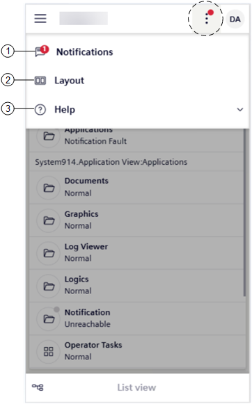

Mobile Flex More Options Menu
In Flex mobile view, you can tap the more option icon on top right of the screen to access a set of options of the Desigo CC Flex mobile web app.

| Go to… | See… |
1 | Notification messages | |
2 | Layout settings | |
3 | Desigo CC Flex info and help |